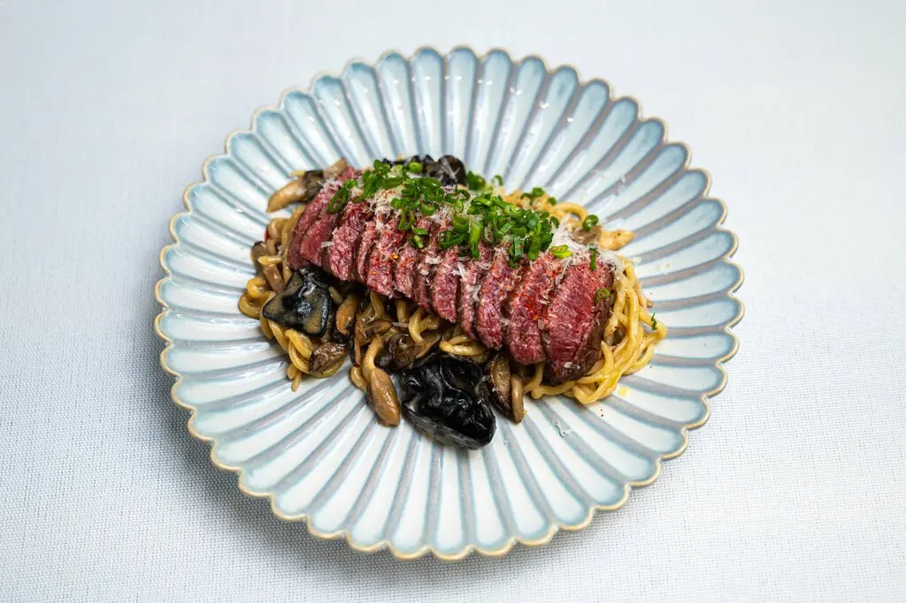
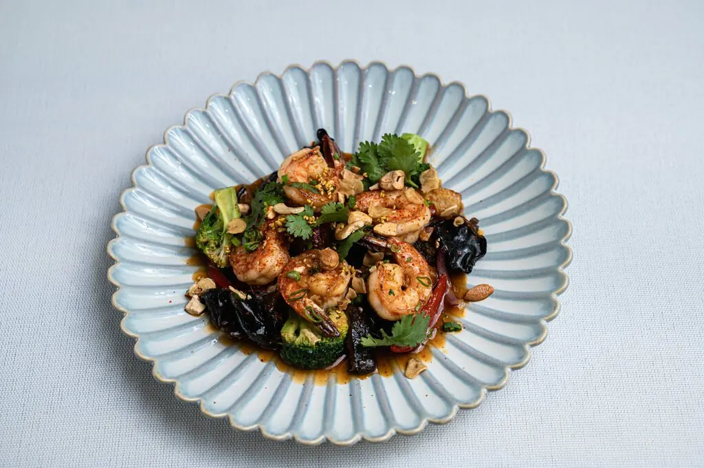
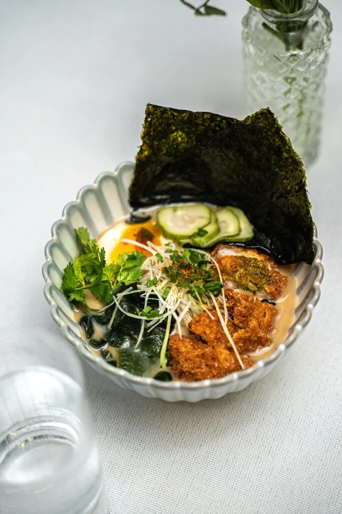
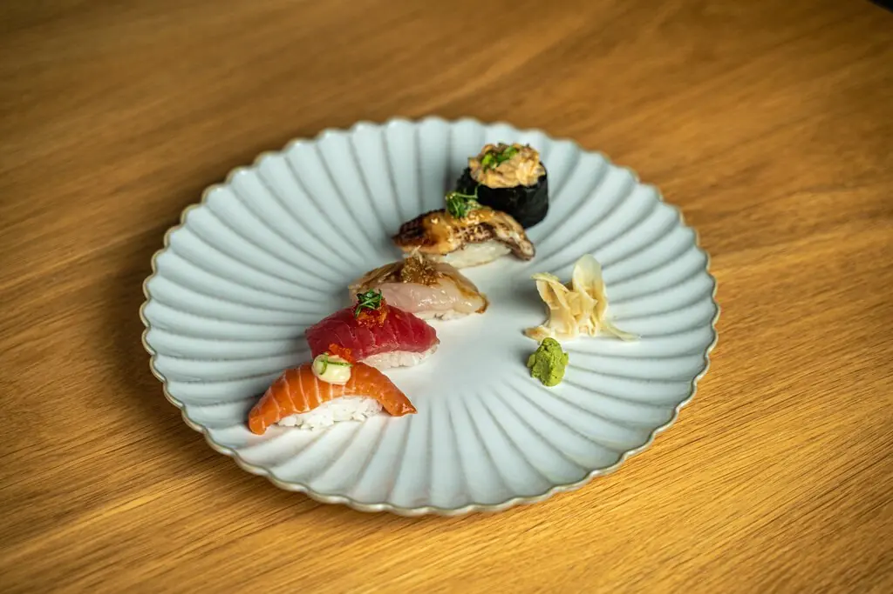
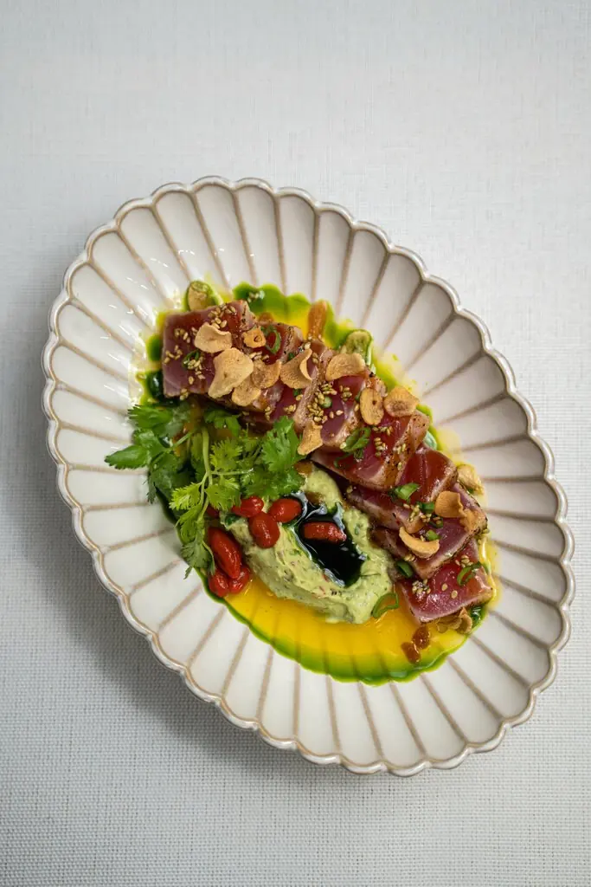
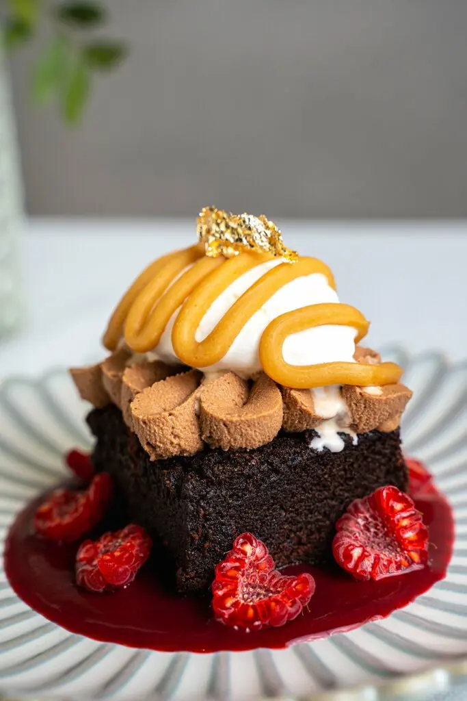
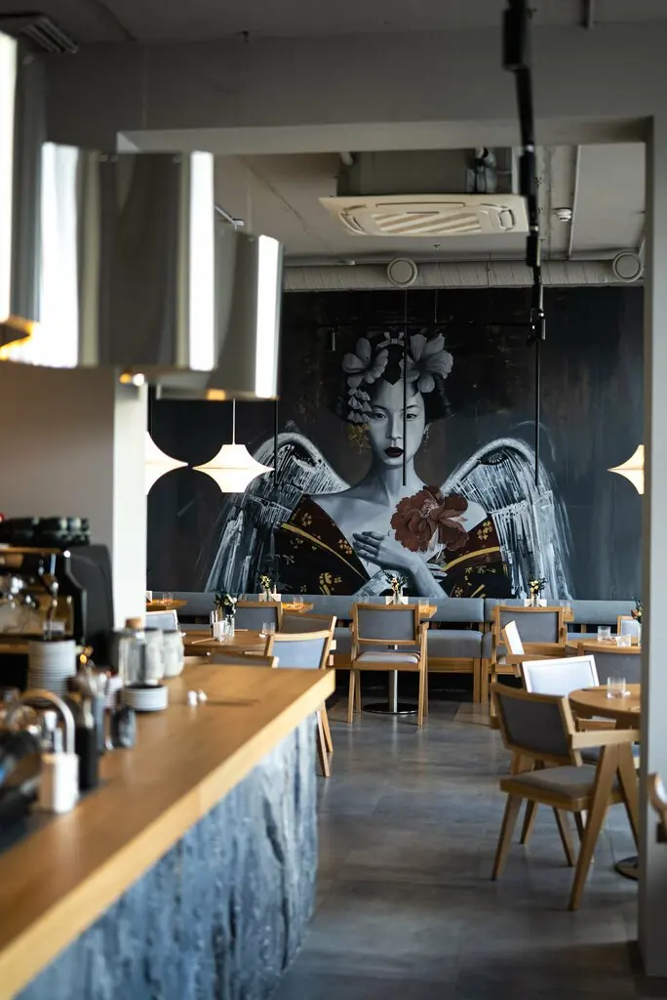

KIZOKU
Азиатская кухня без лишнего. Точная подача, рамен и вечер без спешки.
5,0 · 429 оценок на картах
Меню
Каждая тарелка отдельно

Лапша с мраморной говядиной
970 ₽
Креветки кунг пао
870 ₽
Сёю рамен с цыплёнком кацу
610 ₽
Суши-сет
870 ₽
Тартар из тунца с гуакамоле
690 ₽
Десерт
по менюЗавтракТайский омлет с креветками710 ₽
ЗавтракРисовая каша с кокосовым сорбетом и ягодами350 ₽
ЗакускаСевиче из лосося с битыми огурцами710 ₽
ГорячееТелячьи щёчки с трюфельным пюре930 ₽
СупТом ям с морепродуктами770 ₽
Часть меню с Яндекс Карт, цены уточняйте у официанта.

Зал
Тёмное дерево, бумажные лампы, большие окна
Маленький японский кот на столе и меню на бумаге. Отличное место для завтрака в десять утра и для долгого ужина.
Понравилось абсолютно всё: вкуснейшая еда и быстрая подача.Ilya B
Прекрасное обслуживание и превосходная кухня.Гость
Был день рождения, вынесли два десерта с поздравлениями, очень мило.Гость